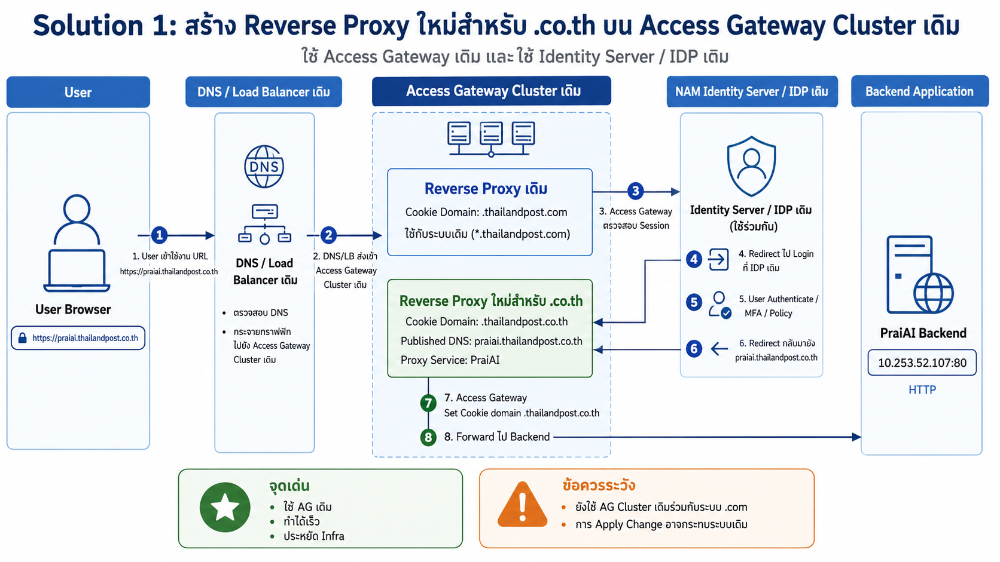
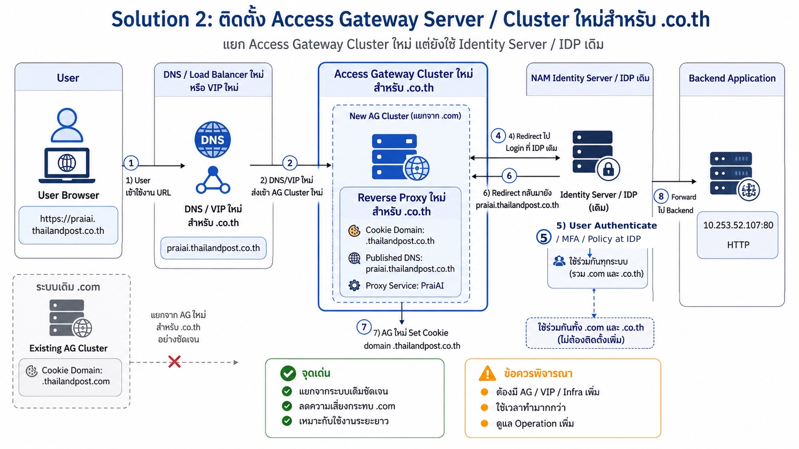

Solution 1: เพิ่ม Reverse Proxy ใหม่บน AG เดิม
ใช้ Infra เดิม
สรุป Concept การออกแบบ 2 Solution สำหรับ NetIQ Access Manager: เพิ่ม Reverse Proxy ใหม่บน Access Gateway เดิม หรือแยก Access Gateway Cluster ใหม่ โดยยังใช้ Identity Server / IDP เดิมเป็นศูนย์กลาง SSO
โจทย์คือระบบเดิมใช้โดเมนกลุ่ม .thailandpost.com และต้องย้ายหรือเพิ่มบริการใหม่มาอยู่ใต้ .thailandpost.co.th
จากเอกสารเดิม ระบบ NAM มีองค์ประกอบหลักคือ Load Balancer, Identity Server, Access Gateway, Reverse Proxy Application, SAML/OIDC และ MFA/AA โดย Access Gateway ทำหน้าที่เผยแพร่ URL, กำหนด Protected Resource / Policy และบางระบบมี Header Injection
Reverse Proxy แต่ละชุดจะมี Cookie Domain ของตัวเอง เช่น .thailandpost.com หรือ .thailandpost.co.th ดังนั้นถ้าจะใช้ Domain-Based Multi-Homing คนละ root domain ควรแยก Reverse Proxy หรือแยก Access Gateway เพื่อไม่ให้ Cookie Domain ชนกัน
IDP เป็นจุด Login กลาง ส่วน Reverse Proxy แต่ละตัวเป็นจุดรับ Traffic และสร้าง Session Cookie ตามโดเมนของตัวเอง
คลิกที่รูปเพื่อขยายดูรายละเอียด


แนวทางนี้ใช้ Access Gateway Cluster เดิมที่มีอยู่ แล้วเพิ่ม Reverse Proxy ใหม่สำหรับโดเมน .thailandpost.co.th โดยกำหนด Cookie Domain เป็น .thailandpost.co.th แยกจาก Reverse Proxy เดิมที่ใช้ .thailandpost.com
แนวทางนี้แยก Access Gateway Cluster ใหม่เพื่อรองรับโดเมน .thailandpost.co.th โดยเฉพาะ ส่วน Identity Server / IDP เดิมยังสามารถใช้ร่วมกันได้ ทำให้แยก Traffic, Change Window, Certificate, Monitoring และ Operation จากระบบ .com เดิมได้ชัดเจนกว่า
มองในมุม Concept, Risk, Infra และการใช้งานระยะยาว
| หัวข้อ | Solution 1: เพิ่ม Reverse Proxy บน AG เดิม | Solution 2: ลง AG Cluster ใหม่ |
|---|---|---|
| แนวคิดหลัก | เพิ่ม Reverse Proxy ใหม่สำหรับ .co.th ใน Access Gateway Cluster เดิม | แยก Access Gateway Cluster ใหม่สำหรับ .co.th โดยเฉพาะ |
| Identity Server / IDP | ใช้ IDP เดิมร่วมกัน | ใช้ IDP เดิมร่วมกัน |
| Cookie Domain | แยกใน Reverse Proxy ใหม่เป็น .thailandpost.co.th | แยกบน AG ใหม่เป็น .thailandpost.co.th |
| Load Balancer / VIP | ใช้ของเดิมได้ ถ้า Capacity และ Routing รองรับ | แนะนำใช้ VIP / Pool ใหม่เพื่อแยก Traffic |
| ผลกระทบระบบ .com เดิม | มีโอกาสกระทบมากกว่า เพราะอยู่บน AG Cluster เดิม | น้อยกว่า เพราะแยก AG Cluster ใหม่ |
| ความเร็วในการทำ | เร็วกว่า | ช้ากว่า เพราะต้องติดตั้งและผูกระบบเพิ่ม |
| ค่าใช้จ่าย / Infra | ต่ำกว่า | สูงกว่า ต้องมี Server / VIP / Operation เพิ่ม |
| ความยืดหยุ่นระยะยาว | เหมาะกับ Migration / Pilot / ใช้ Infra เดิม | เหมาะกับ Production ระยะยาว และการแยกระบบเต็มรูปแบบ |
| Operation | ดูแลง่ายกว่า เพราะยังอยู่ใน Cluster เดิม | แยกดูแลได้ชัด แต่มีงาน Operation เพิ่ม |
| เหมาะกับกรณี | ต้องการทำเร็ว ลด Infra และเปลี่ยนโดเมนแบบค่อยเป็นค่อยไป | ต้องการแยก Environment ลด Risk และเตรียมใช้ .co.th เป็นระบบหลักระยะยาว |
เอาไว้ใช้คุย Concept กับลูกค้าแบบสั้นและชัด
สร้าง Reverse Proxy ใหม่สำหรับ .co.th บน Access Gateway Cluster เดิมก่อน เพื่อทดสอบ Flow, Cookie Domain, Host Header, Backend และ Policy โดยไม่ต้องลงทุน Infra ใหม่ทันที
ติดตั้ง Access Gateway Cluster ใหม่เพื่อแยกระบบ .co.th ออกจาก .com ชัดเจน ลดความเสี่ยงกระทบระบบเดิม และทำให้ Operation / Monitoring / Change Management แยกกันได้